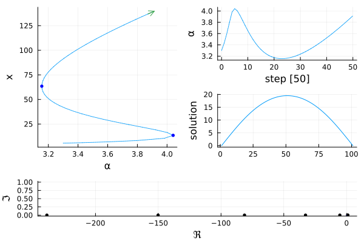
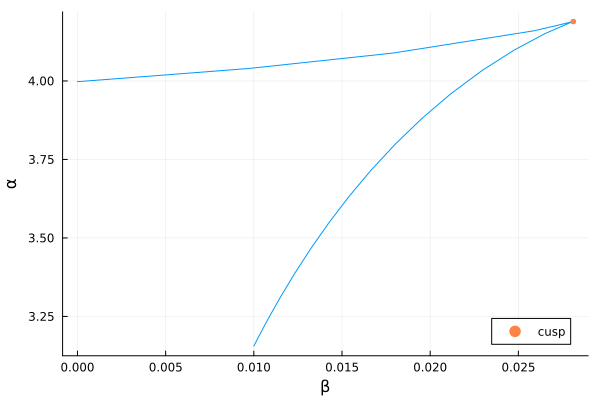

🟡 Temperature model (codim 2)
This is a classical example from the Trilinos library.
This is a simple example in which we aim at solving $\Delta T+\alpha N(T,\beta)=0$ with boundary conditions $T(0) = T(1)=\beta$. This example is coded in examples/chan.jl. We start with some imports:
using Revise, BifurcationKit, LinearAlgebra, Plotsconst BK = BifurcationKitNL(x; a = 0.5, b = 0.01) = 1 + (x + a*x^2)/(1 + b*x^2)We then write our functional:
function F_chan(x, p) (;α, β) = p f = similar(x) n = length(x) f[1] = x[1] - β f[n] = x[n] - β for i=2:n-1 f[i] = (x[i-1] - 2 * x[i] + x[i+1]) * (n-1)^2 + α * NL(x[i], b = β) end return fendWe want to call a Newton solver. We first need an initial guess:
n = 101sol0 = [(i-1)*(n-i)/n^2+0.1 for i=1:n]# set of parameterspar = (α = 3.3, β = 0.01)Finally, we need to provide some parameters for the Newton iterations. This is done by calling
optnewton = NewtonPar(tol = 1e-11, verbose = true)We call the Newton solver:
prob = BifurcationProblem(F_chan, sol0, par, (@optic _.α), # function to plot the solution plot_solution = (x, p; k...) -> plot!(x; ylabel="solution", label="", k...))sol = @time BK.solve( prob, Newton(), optnewton)
┌─────────────────────────────────────────────────────┐
│ Newton step residual linear iterations │
├─────────────┬──────────────────────┬────────────────┤
│ 0 │ 2.3440e+01 │ 0 │
│ 1 │ 1.3774e+00 │ 1 │
│ 2 │ 1.6267e-02 │ 1 │
│ 3 │ 2.4336e-06 │ 1 │
│ 4 │ 6.7452e-12 │ 1 │
└─────────────┴──────────────────────┴────────────────┘
0.000956 seconds (316 allocations: 2.296 MiB)Note that, in this case, we did not give the Jacobian. It was computed internally using Automatic Differentiation.
We can perform numerical continuation w.r.t. the parameter $\alpha$. This time, we need to provide additional parameters, but now for the continuation method:
optcont = ContinuationPar(dsmin = 0.01, dsmax = 0.2, ds= 0.1, p_min = 0., p_max = 4.2, newton_options = NewtonPar(max_iterations = 10, tol = 1e-9))Next, we call the continuation routine as follows.
br = continuation(prob, PALC(), optcont; plot = true)nothing #hideThe parameter axis lens = @optic _.α is used to extract the component of par corresponding to α. Internally, it is used as get(par, lens) which returns 3.3.
You should see
scene = title!("") #hide
The left figure is the norm of the solution as function of the parameter $p=\alpha$, the y-axis can be changed by passing a different recordFromSolution to BifurcationProblem. The top right figure is the value of $\alpha$ as function of the iteration number. The bottom right is the solution for the current value of the parameter. This last plot can be modified by changing the argument plotSolution to BifurcationProblem.
Two Fold points were detected. This can be seen by looking at br.specialpoint, by the black dots on the continuation plots when doing plot(br, plotfold=true) or by typing br in the REPL. Note that the bifurcation points are located in br.specialpoint.
Continuation of Fold points
We get a summary of the branch by doing
br ┌─ Curve type: EquilibriumCont
├─ Number of points: 58
├─ Type of vectors: Vector{Float64}
├─ Parameter α starts at 3.3, ends at 4.2
├─ Algo: PALC [Secant]
└─ Special points:
- # 1, bp at α ≈ +4.04103799 ∈ (+4.04103799, +4.04115545), |δp|=1e-04, [converged], δ = ( 1, 0), step = 5
- # 2, bp at α ≈ +3.15565319 ∈ (+3.15565221, +3.15565319), |δp|=1e-06, [converged], δ = (-1, 0), step = 23
- # 3, endpoint at α ≈ +4.20000000, step = 57
We can take the first Fold point, which has been guessed during the previous continuation run and locate it precisely. However, this only works well when the jacobian is computed analytically. We use automatic differentiation for that
# index of the Fold bifurcation point in br.specialpointindfold = 2outfold = newton( #index of the fold point br, indfold)BK.converged(outfold) && printstyled(color=:red, "--> We found a Fold Point at α = ", outfold.u.p, ", β = 0.01, from ", br.specialpoint[indfold].param,"\n")--> We found a Fold Point at α = 3.15565073161177, β = 0.01, from 3.155653188706858We can finally continue this fold point in the plane $(α, β)$ by performing a Fold Point continuation. In the present case, we find a Cusp point.
We don't need to call newton first in order to use continuation for the codim 2 curve of bifurcation points.
outfoldco = continuation(br, indfold, # second parameter axis to use for codim 2 curve (@optic _.β), # we disable the computation of eigenvalues, it makes little sense here ContinuationPar(optcont, detect_bifurcation = 0))scene = plot(outfoldco, plotfold = true, legend = :bottomright)
The performances for computing the curve of Fold is not that great. It is because we use the default solver tailored for ODE. If you pass jacobian_ma = :minaug to the last continuation call, you should see a great improvement in performances.
Using GMRES or another linear solver
We continue the previous example but now using Matrix Free methods. The user can pass its own solver by implementing a version of LinearSolver. Some linear solvers have been implemented from KrylovKit.jl and IterativeSolvers.jl (see Linear solvers (LS) for more information), we can use them here. Note that we can also use preconditioners as shown below. The same functionality is present for the eigensolver.
# derivative of NdN(x; a = 0.5, b = 0.01) = (1-b*x^2+2*a*x)/(1+b*x^2)^2# Matrix Free version of the differential of F_chan# Very easy to write since we have F_chan.# We could use Automatic Differentiation as wellfunction dF_chan(x, dx, p) (;α, β) = p out = similar(x) n = length(x) out[1] = dx[1] out[n] = dx[n] for i=2:n-1 out[i] = (dx[i-1] - 2 * dx[i] + dx[i+1]) * (n-1)^2 + α * dN(x[i], b = β) * dx[i] end return outend# we create a new linear solverls = GMRESKrylovKit(dim = 100)# and pass it to the newton parametersoptnewton_mf = NewtonPar(verbose = true, linsolver = ls, tol = 1e-10)# we change the problem with the new jacobianprob = re_make(prob; # we pass the differential a x, # which is a linear operator in dx J = (x, p) -> (dx -> dF_chan(x, dx, p)) )# we can then call the newton solverout_mf = @time BK.solve(prob, Newton(), optnewton_mf)
┌─────────────────────────────────────────────────────┐
│ Newton step residual linear iterations │
├─────────────┬──────────────────────┬────────────────┤
│ 0 │ 2.3440e+01 │ 0 │
│ 1 │ 1.3774e+00 │ 68 │
│ 2 │ 1.6267e-02 │ 98 │
│ 3 │ 2.4336e-06 │ 74 │
│ 4 │ 5.6275e-12 │ 63 │
└─────────────┴──────────────────────┴────────────────┘
0.003309 seconds (39.55 k allocations: 3.227 MiB, 0.04% compilation time)We can improve this computation, i.e. reduce the number of Linear-Iterations, by using a preconditioner
using SparseArrays# define preconditioner which is basically ΔP = spdiagm(0 => -2 * (n-1)^2 * ones(n), -1 => (n-1)^2 * ones(n-1), 1 => (n-1)^2 * ones(n-1))P[1,1:2] .= [1, 0.];P[end,end-1:end] .= [0, 1.]# define gmres solver with left preconditionerls = GMRESIterativeSolvers(reltol = 1e-4, N = length(sol.u), restart = 10, maxiter = 10, Pl = lu(P))optnewton_mf = NewtonPar(verbose = true, linsolver = ls, tol = 1e-10)out_mf = @time BK.solve(prob, Newton(), optnewton_mf)
┌─────────────────────────────────────────────────────┐
│ Newton step residual linear iterations │
├─────────────┬──────────────────────┬────────────────┤
│ 0 │ 2.3440e+01 │ 0 │
│ 1 │ 1.3777e+00 │ 3 │
│ 2 │ 1.6266e-02 │ 3 │
│ 3 │ 2.3699e-05 │ 2 │
│ 4 │ 4.8929e-09 │ 3 │
│ 5 │ 5.6333e-12 │ 4 │
└─────────────┴──────────────────────┴────────────────┘
0.000448 seconds (520 allocations: 1.485 MiB)